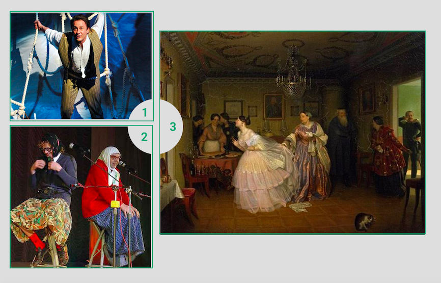

Определение и виды конфликта

Здравствуйте, уважаемые слушатели. Я рада приветствовать вас на курсе, посвященном теме конфликтов. Наш курс будет достаточно продолжительным, мы познакомимся с тем, что такое конфликт, каковы его основные причины, конструктивные и деструктивные функции, что такое структура конфликта, как он развивается в динамике и как все эти знания помогут нам в решении самого важного вопроса: как же быть с конфликтами в нашей жизни.
Итак, начнем мы с того, что без конфликта не было бы жизни. Первое, что здесь следует отметить — люди исторически очень давно обратили внимание на сущность конфликта, на то, что нам в принципе свойственно общаться через конфликт. Если мы обратимся к истории, то увидим следующее. Данные, которые я буду приводить, собраны нашими российскими исследователями конфликтов А.Я. Анцуповым и А.И. Шипиловым.
История изучения конфликта
Первое упоминание о конфликтах мы встречаем еще в древнейших законах хеттского царя Хаммурапи. Это приблизительно 1750 год до н.э. Более того, мы встречаем там не просто упоминание о конфликтах, а руководство по их разрешению. Обратите внимание, сколько времени назад это было — почти 40 веков.
Древнейшие исследования конфликта датируются официально VII-VI веками до н.э.
Много писал о конфликте Гераклит (VI-V века до н.э.).
«Следует знать, что война всеобща, и правда — борьба, и что всё, что происходит, через борьбу и по необходимости».
Гераклит
Уже тогда философ Гераклит постарался обозначить, в чем смысл конфликта, почему без конфликта невозможно существование. И эта фраза «война всеобща» на самом деле про то, что мы встречаемся с конфликтом постоянно, практически ежеминутно в нашей жизни. Но некоторые конфликты не являются для нас такими уж стрессогенными, непривычными, поэтому мы достаточно быстро с ними разбираемся. Например, конфликт такого рода (женщины меня поймут): что сегодня надеть? Есть несколько вариантов. Если я надену этот «лук», то у меня будет то-то и то-то, такие плюсы и минусы, в другом «луке» другие плюсы и минусы и т.д.
Каждая ситуация, в которой мы сталкиваемся с выбором — это не что иное как конфликт, из которого могут родиться интересные находки. Например, в результате конфликта из нашего примера женщина может создать какой-то новый «лук», который удовлетворит все ее текущие потребности.
Такие житейские конфликты, как, например, взять конфетку, потому что очень хочется, или пойти в спортзал, потому что очень надо, знакомы каждому из нас. Именно об этом, по большому счету, говорил Гераклит в фразе «Война всеобща. Всё, что происходит, через борьбу и по необходимости». Действительно, у нас есть какая-то потребность, которую мы хотим удовлетворить, и существует несколько способов её удовлетворения. Или, например, у нас существует потребность, мы хотим ее удовлетворить, но сделать это не получается, и опять возникает конфликт.
Продолжил размышление о конфликте Цицерон. Это уже практически перед началом нашей эры — I век до н.э. Знаменитый трактат «О государстве». В этом трактате Цицерон уже рассуждает о межгрупповом конфликте. Он определяет конфликт как насилие, разделяя его на «справедливое» и «несправедливое». И тут же Цицерон выдвигает тезис о «справедливой и благочестивой войне». Здесь мы впервые сталкиваемся с информацией о том, что, на самом деле, не всегда внешний конфликт, выражающийся явной агрессией, бывает негативным или несправедливым. Давайте вспомним известный факт уже из российской истории, когда наш святой Сергий Радонежский благословлял монахов на ратные подвиги на поле боя — благословлял как будто на насилие, но, тем не менее, это про защиту чего-то важного и своего. Окончательный и полновесный ответ на этот вопрос скорее всего невозможен, по крайней мере, в общем виде. Безусловно, в каждой ситуации вопрос справедливости и несправедливости войны будет разрешаться исходя из контекста. Но хочу отметить, что глубокие, серьезные философские размышления об этом появились уже более 20 веков назад.
Интересно трансформировалось понятие конфликта в Средние века и в начале нашего тысячелетия. Аврелий Августин в работе «О граде божьем» писал:
«...Те, которые нарушают мир, не ненавидят его как таковой, а хотят лишь другого мира, который отвечал бы их желаниям».
Аврелий Августин
На самом деле, Аврелия Августина могли бы поблагодарить современные психологи, потому что он очень точно выразил одну из важных причин конфликта. Проблема конфликтующего не в том, что его занимает борьба с чем-то, что есть сейчас. На самом деле эта борьба возникает из-за того, что ему хочется чего-то другого, и он пока не понимает, какие еще есть способы достичь другого мира, кроме как бороться с существующим. Сейчас мы знаем, что это один из деструктивных способов достичь своих интересов: воевать против чего-то вместо того, чтобы выстраивать свои стратегии. Но, тем не менее, важно, что Аврелий Августин (345-430) это отметил.
Философ определил, что решающим является не сам процесс конфликта, а его цель. Гипотетически, если все потребности человека будут удовлетворены, он не должен конфликтовать. Это тоже достаточно точное замечание. Помните мультфильм «Каникулы в Простоквашино»? Почему почтальон Печкин был вредным в начале и стал добрым в конце? Как он успокоился? Замечательная фраза: «Почему я вредным был? У меня велосипеда не было». Внешний конфликт часто является следствием конфликта внутреннего и неудовлетворенной потребности. Как правило, если у человека все хорошо, он считается достаточно неконфликтным. У него действительно нет для этого повода.
В Средние века, 13 век, Фома Аквинский выдвинул тезис о необходимости «авторизованной компетенции», то есть санкции государства для ведения войны. При этом насилие продолжало быть для него грехом. И действительно, в Средневековье, религия играла значительную роль и насилие считалось грехом, но почему-то это не отменяло, например, инквизицию и войны. С этой двойственностью мы будем сталкиваться, если станем изучать конфликты в период Средневековья.
В XV-XVI веках мы уже видим системные попытки анализа конфликтов, и одна из этих попыток — это, конечно, трактат Никколо Макиавелли «Государь». Макиавелли писал, что конфликт является неотъемлемым свойством общества, но при этом он объяснял его природной порочностью человека. Макиавелли очень интересно разделял общество на тех, кто право имеет — кто вправе конфликтовать — и на тех, кто такого права не имеет. Первые могли развязывать войны, совершать акты насилия и агрессии по отношению ко вторым. Об этом условном разделении заговорили в контексте осмысления конфликта.
В XVIII веке Жан Жак Руссо предложил теорию общественного договора. Он предположил, что люди могут договориться не предпринимать агрессивных действий друг против друга. К этому времени стало понятно, что агрессивная природа человека — это некая данность, с которой мы ничего не можем поделать. Агрессия — это часть нормальной человеческой природы. Но человек, как существо разумное, может договориться о том, как и где проявлять или не проявлять эту агрессию для общего блага. По большому счету, в политике этим занимаются и сейчас.
Гегель связывал конфликт с социальной поляризацией. На одной чаше весов у него было накопление богатства, на другой — труд в рамках класса. И здесь мы впервые можем говорить о конфликте, как о групповом классовом явлении.
С XVIII века тема конфликта бурно развивалась и в философии, и в науках, которые занимались человеком: отчасти они были связаны с религией, отчасти с политикой, отчасти с социальным устройством. Чуть по-разному, с разными акцентами изучение конфликта развивалось в западных, азиатских странах, России. Но по крайней мере, с этого момента значительных работ стало больше.
Если говорить о российской истории развития конфликта, то здесь конфликт развивался на стыке сразу нескольких дисциплин: социологии, политологии, биологии, психологии, различных социальных наук и т.д. — некоторые исследователи насчитывают около 15 дисциплин, которые лежат в основе современной конфликтологии.
Выделяют три периода развития конфликтологии как науки на территории России и бывшего Советского Союза.
Период 1: начало XX века. В этот период конфликтология только закладывалась. Это были первые попытки зарождающейся советской власти размышлять на эту тему, появлялись первые статьи.
Период 2: середина XX века. В этот период у конфликтологии были разные этапы становления. Наука развивалась, но был и провал, связанный с Великой Отечественной войной, когда никаких работ, конечно, не выпускалось.
Период 3: с 90-х годов XX века по сегодняшний день. Это основной период развития конфликтологии, когда количество работ по этой теме увеличивается лавинообразно. В этот период конфликтология стала отдельной дисциплиной, по которой защищают кандидатские и докторские диссертации. Это уже признак того, что наука приобрела свой теоретический фундамент. И, конечно, этот период отмечен тем, что к нам, в основном с Запада, от западных коллег пришли методики, как работать с конфликтом на практике.
Природа конфликта: почему без конфликта невозможно жить
Сейчас мы уже можем подойти к самому главному. Посмотрите на эти три картинки. Все они связаны с искусством. Они помогут нам хорошо изнутри понять, что такое конфликт и почему без него невозможно жить.

Обратите внимание: на каждой из этих трех картинок конфликт.
На первой картинке внутренний конфликт артиста. Конфликт его героя, его персонажа: тот конфликт, который заставляет его совершать резкие движения, страдать, переживать, рваться.
На второй картинке тоже конфликт двух артистов, двух персонажей. Смотрите, они отвернулись друг от друга. И на самом деле, нам интересно наблюдать и за одним, и за другим сюжетами. Давайте просто попробуем себе представить, насколько нам было бы интересно наблюдать за артистами, если бы они просто спокойно стояли. Я думаю, что наше внимание отвлеклось от них буквально через 5-10 секунд, и это с учетом того, что артисты известные и узнаваемые. Нам неинтересно смотреть, когда конфликта нет.
Неужели, это природа человека такая, что ему хочется чего-нибудь погорячее? И так, и не так.
Обратите внимание на третью картину. Известная картина русского художника Павла Федотова «Сватовство майора». Вы можете увидеть ее в Третьяковской галерее. Обратите внимание, почему эта картина с таким, в общем-то, типичным сюжетом до сих пор привлекает много внимания, является популярной?
Если мы посмотрим внимательно на композицию этой картины, то увидим, что она состоит из двух совершенно противоположных частей. В одной части стоит майор за дверью. Если внимательно присмотреться, его поза очень статична. Положение его ног напоминает ножки стула, который у нас на переднем плане. Это также дает ощущение статики, уверенности, стабильности, косности, постоянства. Художник придает этому, скорее, негативный оттенок. И этот негативный оттенок подчеркивается той динамикой, которая наблюдается во второй части картины. Если справа все вертикально и устойчиво, то слева линии диагональные. Основная диагональная линия создается фигурой невесты, которая рвется от двери к себе в комнату, испытывая совсем не положительные чувства.
На эту картину можно смотреть долго, и завораживает она как раз тем, что на полотне разыгрывается настоящий конфликт. Художнику удалось замечательно его передать живописными способами.
Что же важно? Если б не было конфликта, то у нас никогда не было бы действия. Когда актеров и режиссеров готовят в театральных институтах, их обучают основным правилам того, как быть на сцене. Ведь актер на сцене не изображает, актер на сцене живет. Но как же сделать так, чтобы жить было интересно и самому актеру, и тем, кто на него смотрит? Это невозможно без конфликта.
На что мы обычно обращаем внимание? Вряд ли на декорации и какие-то лирические отступления. Простой пример. Вы смотрите фильм и куда-то отошли. Фильм нельзя поставить на паузу, поэтому, когда вы возвращаетесь, что вы спрашиваете у тех, кто смотрел фильм с вами? Как замечательно режиссер снял крупный план? Нет. Обычно вы задаете вопрос: «Что было?» Вас интересует, что вы пропустили по действию, по сюжету. А теперь давайте задумаемся, откуда возьмется действие.
Как мы с вами уже выяснили, если у человека все хорошо, ему действовать не нужно. Любое наше действие проявляется только тогда, когда у нас есть некая фрустрация, то есть какая-то наша потребность не удовлетворена и мы ощущаем конфликт. Какой это может быть конфликт? Обычно их всего лишь несколько.
- Конфликт между несколькими вариантами удовлетворения своего желания.
- Конфликт между желанием удовлетворить потребность и невозможностью это сделать.
- Конфликт между желанием удовлетворить одну потребность в то время, как обстоятельства диктуют, что надо удовлетворить другую.
Обычно, если говорят о взаимоотношениях мужчины и женщины, то, как правило, типовых конфликтов тоже несколько.
- Он любит ее, она не любит его.
- Она любит его, он не любит ее.
- Они любят друг друга, но не могут быть вместе.
- Они не любят друг друга, но должны быть вместе.
Это типовые конфликты, на которых строится драматургия. В разных ситуациях могут быть другие вариации, но в целом логика понятна. Если бы у героев спектаклей, фильмов, книг с самого начала была возможность удовлетворить свою потребность, то тогда спектакль, фильм или книга превратились бы в описание того, как герои встают, умываются, одеваются, завтракают, идут на работу, возвращаются с работы. И такое произведение вряд ли кто-то заинтересовало. В нем нет действий, внутренних волевых решений.
Только когда появляется конфликт, появляется возможность реального действия. Почему же нам так нравится наблюдать конфликты? Для нас это бессознательный опыт того, как мы можем организовать свое волевое действие в сложной ситуации. Для нас это возможность посмотреть, как это делают другие, примерить к себе и понять: мы берем это в свою копилку, в свой опыт или нет. И, более того, нас интересуют те фильмы, спектакли, где разыгрываемый артистами конфликт наиболее близок к тому материалу, который есть сейчас у нас. Именно благодаря изучению такого материала мы получаем первое представление о том, как разрешить свой конфликт, и это представление затем помогает нам совершать какие-то действия в собственной жизни. Очень часто, если б не фрустрация в потребности, вызванная конфликтом, то мы бы никогда не смогли действовать дальше, сделать что-то серьезное. Вообще в психологии считается, что ребенок в детстве растет и взрослеет только, когда вынужден сталкиваться с небольшой фрустрацией. И это ожидаемо.
Я хочу закончить эту лекцию цитатой из известного фильма «Москва слезам не верит». Там героиня говорит: «Если бы я не обожглась тогда так сильно, ничего бы из меня не вышло». Эта фраза наиболее точно и ярко выражает, почему без конфликта не было бы жизни. Мы с вами продолжим работу с темой конфликта в следующей лекции.